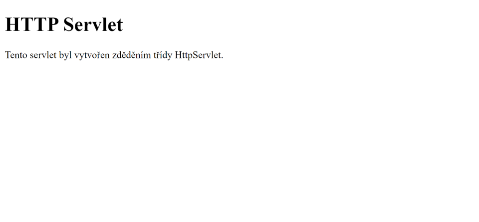

HTTP Servlet
V minulé části jste se dozvěděli co to jsou servlety a k čemu slouží. Také jste se mohli dozvědět, že existují v podstatě tři cesty jak vytvořit servlet. První dvě jsme si ukázali v minulé části. V této části si ukážeme vytvoření servletu zděděním třídy HttpServlet.
Třída HttpServlet
Pokud chceme vytvořit servlet, který pracuje pouze s protokolem HTTP, tak je nejlepší jej vytvořit zděděním třídy HttpServlet. Předchozí dvě možnosti tvorby servletů, které jsme si ukázali v minulé části, se hodí hlavně pro tvorbu servletů využívající jiné protokoly než HTTP. Třída HttpServlet nám totiž poskytuje kromě metody service i metody, které můžeme použít pro reakci na requesty poslané pomocí specifických HTTP metod. Tyto metody ukazuje následující tabulka. Volají se z metody service, kterou za nás implementuje HttpServlet. Nemusíme tedy v metodě service sami zjišťovat, o jaký typ requestu se jedná.
| Metoda | Popis |
|---|---|
| doGet(HttpServletRequest req, HttpServletResponse res) | Volá se pro GET requesty. |
| doHead(HttpServletRequest req, HttpServletResponse res) | Volá se pro HEAD requesty. |
| doPost(HttpServletRequest req, HttpServletResponse res) | Volá se pro POST requesty. |
| doPut(HttpServletRequest req, HttpServletResponse res) | Volá se pro PUT requesty. |
| doDelete(HttpServletRequest req, HttpServletResponse res) | Volá se pro DELETE requesty. |
| doOptions(HttpServletRequest req, HttpServletResponse res) | Volá se pro OPTIONS requesty (pravděpodobně nepoužijete). |
| doTrace(HttpServletRequest req, HttpServletResponse res) | Volá se pro TRACE requesty (pravděpodobně nepoužijete). |
Možná jste si všimli, že pro metodu PATCH bohužel neexistuje v HttpServlet třídě metoda doPatch. Můžeme si pro ni ale podporu přidat, pokud bychom ji potřebovali. Později si v této části ukážeme, jak to udělat.
HTTP Servlet Request a HTTP Servlet Response
Ve třídě HttpServlet se nepoužívají objekty typu ServletRequest a ServletResponse, jako tomu je u třídy GenericServlet, ale používají se objekty typu HttpServletRequest a HttpServletResponse. Jedná se o rozhraní, která rozhraní ServletRequest a ServletResponse rozšiřují a přidávají pár dalších metod, které můžeme použít. Tyto metody si můžete prohlédnout v dokumentaci.
Vytvoření HTTP Servletu
Pro ukázku vytvoření servletu zděděním třídy HttpServlet si opět vytvoříme servlet, který jen vyrenderuje jednoduchou HTML stránku. Vytvořte si nový Maven projekt (jak to udělat v Eclipse je popsáno v první části tutoriálu), který pojmenujte například jako http-servlet. Poté vytvořte třeba třídu MujServlet, které nastavte, že dědí od třídy HttpServlet.
- src
- main
- java
- resources
- webapp
- test
- java
- resources
- main
- target
<project xmlns="http://maven.apache.org/POM/4.0.0" xmlns:xsi="http://www.w3.org/2001/XMLSchema-instance" xsi:schemaLocation="http://maven.apache.org/POM/4.0.0 https://maven.apache.org/xsd/maven-4.0.0.xsd">
<modelVersion>4.0.0</modelVersion>
<groupId>io.github.jirkasa</groupId>
<artifactId>http-servlet</artifactId>
<version>0.0.1-SNAPSHOT</version>
<packaging>war</packaging>
<name>http-servlet</name>
<properties>
<project.build.sourceEncoding>UTF-8</project.build.sourceEncoding>
<project.reporting.outputEncoding>UTF-8</project.reporting.outputEncoding>
<java.version>17</java.version>
<maven.compiler.source>${java.version}</maven.compiler.source>
<maven.compiler.target>${java.version}</maven.compiler.target>
</properties>
<dependencies>
<dependency>
<groupId>javax.servlet</groupId>
<artifactId>javax.servlet-api</artifactId>
<version>4.0.1</version>
<scope>provided</scope>
</dependency>
</dependencies>
</project>import javax.servlet.http.HttpServlet;
public class MujServlet extends HttpServlet {
}V naší servlet třídě můžeme implementovat metody, které jsou popsány výše v tabulce, pro zpracování requestů poslaných různými HTTP metodami. V našem případě chceme reagovat jen na GET requesty, takže přepíšeme metodu doGet. Vygenerujeme v ní jen jednoduchou webovou stránku, stejně jako v minulých částech tutoriálu.
import java.io.IOException;
import java.io.PrintWriter;
import javax.servlet.ServletException;
import javax.servlet.http.HttpServlet;
import javax.servlet.http.HttpServletRequest;
import javax.servlet.http.HttpServletResponse;
public class MujServlet extends HttpServlet {
@Override
protected void doGet(HttpServletRequest req, HttpServletResponse res) throws ServletException, IOException {
res.setContentType("text/html; charset=utf-8");
try (PrintWriter out = res.getWriter()) {
out.println("<!DOCTYPE html>");
out.println("<html>");
out.println("<head>");
out.println("<meta charset=\"UTF-8\">");
out.println("<title>HTTP Servlet</title>");
out.println("</head>");
out.println("<body>");
out.println("<h1>HTTP Servlet</h1>");
out.println("<p>Tento servlet byl vytvořen zděděním třídy HttpServlet.</p>");
out.println("</body>");
out.println("</html>");
}
}
}Náš servlet je hotový, teď již jen zbývá namapovat jej na URL v souboru web.xml. Vytvoříme tedy ve složce webapp složku WEB-INF a v ní soubor web.xml. Náš servlet můžeme namapovat třeba jako domovskou stránku aplikace napsáním "/" do url-pattern elementu (vlastně to nastaví, že se to zavolá pro jakékoliv URL), jak ukazuje následující ukázka.
- src/main/webapp/WEB-INF
- src/main/webapp/WEB-INF
<web-app xmlns:xsi="http://www.w3.org/2001/XMLSchema-instance"
xmlns="http://java.sun.com/xml/ns/javaee"
xmlns:web="http://Java.sun.com/xml/ns/javaee/web-app_3_0.xsd"
xsi:schemaLocation="http://java.sun.com/xml/ns/javaee
http://java.sun.com/xml/ns/javaee/web-app_3_0.xsd"
id="WebApp_ID" version="3.0">
<servlet>
<servlet-name>MujServlet</servlet-name>
<servlet-class>MujServlet</servlet-class>
</servlet>
<servlet-mapping>
<servlet-name>MujServlet</servlet-name>
<url-pattern>/</url-pattern>
</servlet-mapping>
</web-app>Pokud si aplikaci spustíte, tak po navštívení http://localhost:8080/http-servlet/ uvidíte stránku, kterou ukazuje následující obrázek.
Přidání podpory pro metodu PATCH
Jak jsem již psal, tak pro HTTP metodu PATCH neexistuje v HttpServlet třídě metoda doPatch. Můžeme si ji ale sami přidat. Je k tomu potřeba přepsat metodu service, ve které zjistíme, jakou metodou byl poslán request. Pokud byl poslán metodou PATCH, tak zavoláme metodu doPatch, jinak zavoláme metodu service nadtřídy. Následující ukázka ukazuje, jak to udělat.
import java.io.IOException;
import java.io.PrintWriter;
import javax.servlet.ServletException;
import javax.servlet.http.HttpServlet;
import javax.servlet.http.HttpServletRequest;
import javax.servlet.http.HttpServletResponse;
public class MujServlet extends HttpServlet {
protected void doPatch(HttpServletRequest req, HttpServletResponse res) throws ServletException, IOException {
res.setContentType("text/html; charset=utf-8");
res.getWriter().write("PATCH request byl zpracován");
}
@Override
protected void service(HttpServletRequest req, HttpServletResponse res) throws ServletException, IOException {
if (req.getMethod().equalsIgnoreCase("PATCH")) {
doPatch(req, res);
} else {
super.service(req, res);
}
}
}To je pro tuto část vše. V příští části si ukážeme různé způsoby, jak ukládat informace o uživateli, když prochází webovými stránkami.